← Daily Papers
本报告由大模型自动生成，可能存在理解、归纳或数据转述错误；请以原论文为准。
Avant-Garde: Empowering GPUs with Scaled Numeric Formats Minseong Gil, Dongho Ha, Simla Burcu Harma, Myung Kuk Yoon, Babak Falsafi, Won Woo Ro, Yunho Oh · Proceedings of the 52nd Annual International Symposium on Computer Architecture · 2025 · 原文 · PDF
报告模型：gemini-3.1-pro-preview / high
这是一份关于发表于 ISCA 2025 的论文《Avant-Garde: Empowering GPUs with Scaled Numeric Formats》的详细解读。为便于理解，正文首先构建了理解该文所需的系统全貌和核心概念。
0. 补充背景与系统全貌
本文研究的对象是**图形处理器（GPU）在执行 深度神经网络（DNN）**计算时的微架构设计。现代 GPU 的硬件层级主要包括：全局内存、寄存器文件（Register File）、通用计算核心（CUDA Cores，负责标量和通用逻辑）以及张量核心（Tensor Cores，专门负责矩阵乘加运算 MMA）。GPU 的执行模型是单指令多线程（SIMT），基本执行单元称为 Warp（通常包含 32 个并行线程）。在处理 DNN 的矩阵乘法时，数据会被切分成特定维度的小块，称为 Tile （例如 16×16 的矩阵块），以便直接喂给 Tensor Core 处理。
随着 DNN 模型呈指数级增长，芯片密度的提升速度已无法满足需求。为了提高算术密度（Arithmetic Density，即单位面积每秒的运算次数） ，业界广泛采用了量化（Quantization）技术，即将传统的高精度浮点数（如 32 位浮点 FP32）压缩为低精度数值（如 8 位整数 INT8）。然而，极低精度的数值表示范围有限，容易导致模型精度下降。
为了在算术密度和模型精度之间寻找平衡，业界提出了一种新的数据表示方法：缩放数值格式（Scaled Numeric Formats） 。这是本文探讨的核心对象。
元素（Element/Mantissa）： 矩阵中实际参与乘加运算的低精度数值。块（Block）： 在内存和计算中被划分为一组的若干个元素。缩放因子（Scaling Factor/Exponent）： 属于同一个 Block 的所有元素共享的一个数值（通常作为指数）。在计算最终结果时，Block 内的所有元素都需要乘上这个统一的缩放因子，从而以极低的存储代价恢复了数值的动态范围。层级（Levels）： 描述缩放因子的嵌套结构。单层级格式（Single-level） 指一个 Block 共享一个缩放因子；多层级格式（Multi-level） 指在一个大 Block 共享一级缩放因子的基础上，其内部的子集（Subset）还各自拥有次级缩放因子，以实现更细粒度的精度控制。
本文要解决的痛点在于： 现有的 GPU 硬件（即便是支持 FP8 的前沿 GPU）无法原生处理具有复杂层级和自定义块大小的缩放数值格式。当 Tensor Core 试图对这些格式进行矩阵乘法时，必须依赖软件（即通过编译器生成额外的 CUDA Core 指令）来提前解析这些 Block、提取缩放因子并将其应用到每个元素上。这种“软件代劳”打破了硬件的计算节奏，消耗了大量额外的寄存器和指令周期，严重抵消了缩放格式本该带来的算术密度优势。
1. 引言与动机 (Introduction & Why Avant-Garde?)
文章首先指出，像 GPT-3 这样拥有千亿参数的模型带来了巨大的计算和内存挑战。为了缓解这一问题，像 NVIDIA 的 FP8、微软主导的 OCP MX（Shared Microexponents）格式以及 HBFP（Hybrid Block Floating Point）等缩放数值格式应运而生。
结合图 1 ，作者具体展示了这些格式的差异：
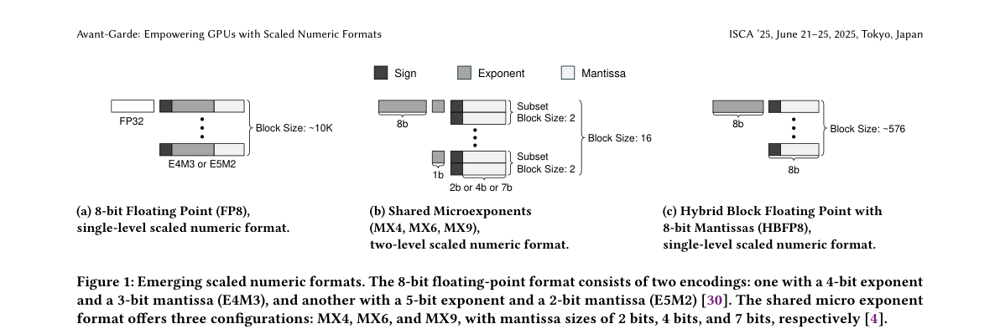
Figure 1 · 原文 PDF 第 3 页
FP8 是一种单层级格式，它依靠软件层面为整个张量（Tensor，即高维数组）维护一个全局缩放因子，硬件层面仅处理 8 位数据（如 E4M3 包含 4 位指数和 3 位尾数）。MX9 是一种两层级格式。它将 32 个元素作为一个一级 Block，共享一个 8 位的缩放因子；同时将这 32 个元素两两分组（Subset），每组再共享一个 1 位的次级缩放因子，其底层的元素是 8 位定点数。
存在的问题： 作者通过对现有 GPU 微架构的剖析指出，标准的 Tensor Core 只能处理标准数值格式。图 2 和图 3 揭示了在传统 GPU 上执行 MX9 等格式的尴尬现状：为了计算点积（Dot Product），GPU 必须执行大量的加载指令（ld.global）、乘法（mul）和乘加指令（mad）来分别提取并应用一级和二级缩放因子。
作者进一步通过实验（图 4 ）量化了这一代价：与传统的 INT8 格式相比，在现有 GPU 上用软件方式处理 MX9 格式，寄存器文件的使用量增加了 1.38 倍，执行的指令数量激增了 2.14 倍。寄存器压力的增大会导致 GPU 的流多处理器（SM）上能够并发执行的线程数减少，从而严重拖慢执行速度。
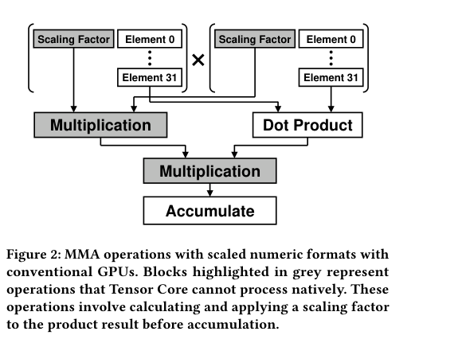
Figure 2 · 原文 PDF 第 3 页 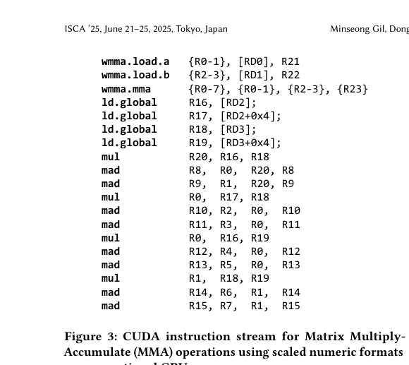
Figure 3 · 原文 PDF 第 4 页 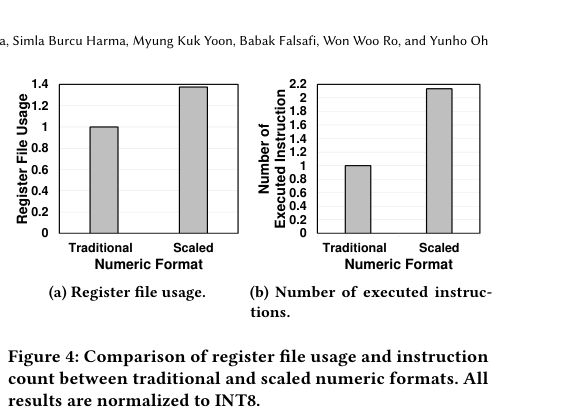
Figure 4 · 原文 PDF 第 4 页 2. Avant-Garde 架构设计 (Avant-Garde)
为了彻底消除软件处理缩放因子的开销，作者提出了一种名为 Avant-Garde 的 GPU 微架构。其核心设计哲学是**“硬件扁平化（Flattening）”**。
“扁平化”是指：无论软件输入的是何种块大小、何种多层级嵌套的缩放数值格式，Avant-Garde 都会在 GPU 内部统一将其转换为一种标准的“单层级内部表示（Flattened Block）”。在这个内部表示中，最多 32 个元素共享一个统一的缩放因子。作者之所以将上限设定为 32，是出自 GPU 硬件规范的约束——这恰好与一个 Warp 的线程数（32）以及一个 Warp 寄存器的大小（128 字节）对齐，从而最大化硬件利用率。
为了实现这一目标，Avant-Garde 在常规 GPU 流水线中引入了两个关键的微架构创新（参考图 6 和图 7 ）：
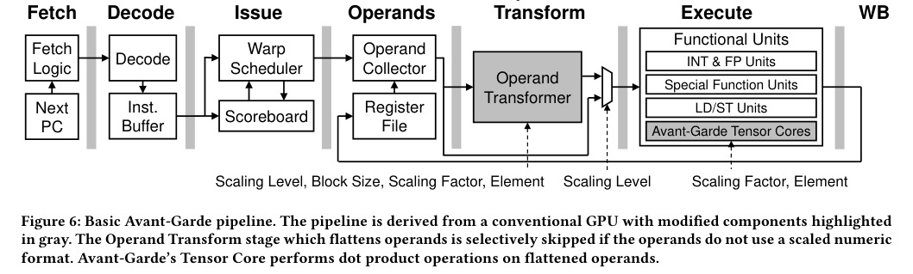
Figure 6 · 原文 PDF 第 6 页 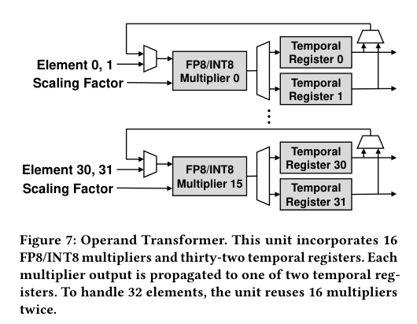
Figure 7 · 原文 PDF 第 6 页
操作数转换器（Operand Transformer）：
这是一个新增在操作数读取（Read Operands）和执行（Execute）阶段之间的专用硬件模块。当寄存器取出多层级的 MX 等格式时，该模块会利用其内部包含的 16 个 FP8/INT8 乘法器，将次级缩放因子直接乘入底层的元素中。由于有 32 个元素，该模块需要复用乘法器迭代两次。最终，它输出一个剥离了复杂嵌套、只保留一级全局缩放因子的“扁平化块（Flattened Block）”。这种转换在执行矩阵乘法前作为预处理步骤完成。
重新设计的张量核心（Avant-Garde Tensor Core）：
结合图 8 ，传统的 Tensor Core 只能对元素进行点积。而 Avant-Garde Tensor Core 接收的是“扁平化块”。在进行矩阵乘法时，两个操作数（矩阵 A 和 B）各自带有一个缩放因子。由于缩放因子本质上是指数，根据数学规则 a x × a y = a x + y
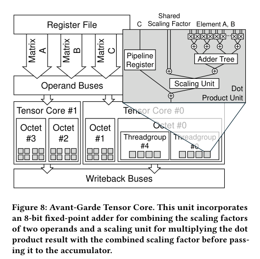
Figure 8 · 原文 PDF 第 7 页
指令集与 API 支持：
为了让编译器和程序员调用这些硬件，作者对 ISA（指令集架构）进行了扩展（参考图 9 ）。
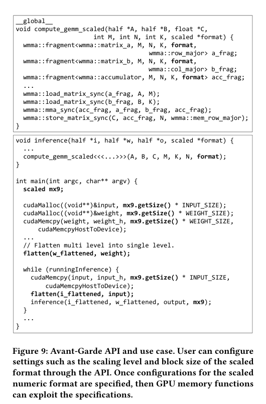
Figure 9 · 原文 PDF 第 7 页
定义了 FLAT 指令来显式触发 Operand Transformer。
定义了扩展的 WMMA（Warp 级矩阵乘加）指令。本文举了一个具体命名的例子：SMMA.16816.mx9.mx9。这里作者沿用了 NVIDIA 的命名习惯：SMMA 代表缩放矩阵乘加；16816 描述了操作的 Tile 形状，即输出矩阵是 16×16，输入矩阵的 K 维度（点积长度）是 16；后缀 mx9.mx9 则明确指定了矩阵 A 和矩阵 B 采用的格式。通过这些 API，数据可以一直以高密度的缩放格式驻留在内存和寄存器中，仅在即将运算时才由硬件瞬间完成转换。
(需要注意的是，文章在 3.3 节提到这些硬件开销是基于 FreePDK 45nm 工艺进行面积和功耗评估的。在当前 2026 年的前沿 GPU 往往采用 3nm 或 4nm 节点，45nm 是一种学术界常用的相对比例评估标准。即便如此，其带来的 1.4% 面积和 1.2% 功耗开销相比其性能收益也是极其微小的。)
3. 评估与实验结果 (Evaluation)
实验部分，作者采用了修改版的 Accel-Sim 模拟器，以 NVIDIA H100 GPU 为基线（ Baseline，模拟其依靠软件处理 MX9 和 HBFP 的行为）。测试对象包括 HBFP、MX9 和 MXFP8 三种格式，运行在 ViT（视觉 Transformer）、BERT 和 GPT-2 等主流 DNN 模型上。
实验回答了四个核心问题：
吞吐量与执行时间（图 10，图 11）：
结果表明，Avant-Garde 相比基线 GPU，整体吞吐量提升了 1.74 倍，推理执行时间缩短了 44%。其中，MX9 格式的收益最大（吞吐量提升 1.93 倍）。这是因为 MX9 作为两层级格式，在传统 GPU 上需要极其复杂的软件解包操作，而 Avant-Garde 的硬件流水线彻底消除了这一瓶颈。作者同时也指出，随着模型规模增大（如 ViT-Large），访存逐渐成为瓶颈，硬件转换带来的边际收益会有轻微递减。
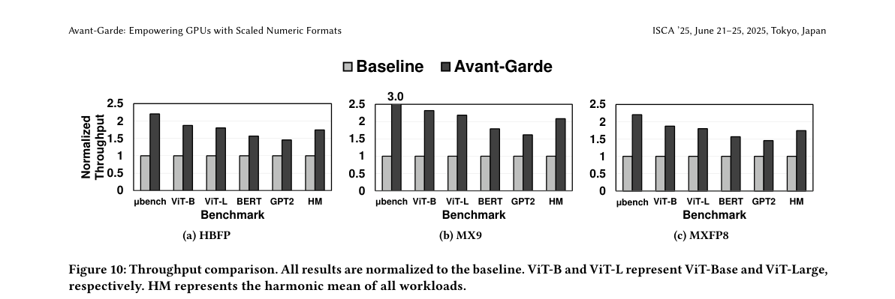
Figure 10 · 原文 PDF 第 9 页 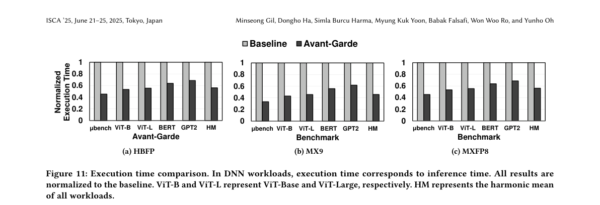
Figure 11 · 原文 PDF 第 10 页
指令数量下降幅度（图 12）：
这直接证明了 Avant-Garde 为什么快。对于像 HBFP 这样的单层格式，Avant-Garde 减少了 52.2% 的指令数；对于 MX9 这样的两层格式，指令数更是锐减了 65.7%。大量原本用于计算缩放因子的 CUDA 标量指令被彻底剔除。
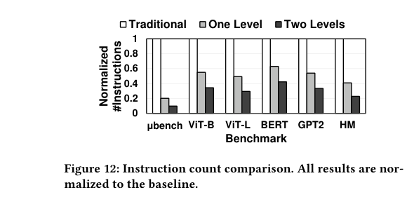
Figure 12 · 原文 PDF 第 10 页
能耗变化（图 13）：
尽管 Avant-Garde 引入了新的微架构导致静态和动态功耗微增了约 1.2%，但由于执行时间大幅缩短、指令获取（Instruction Fetch）显著减少，系统总能耗大幅下降。具体而言，MX9 格式节省了 49% 的能量。作者还验证了，当执行不需要扁平化的 FP8 工作负载时，额外硬件处于闲置状态，不会产生不必要的能耗（仅增加 0.1% 的漏电功耗）。
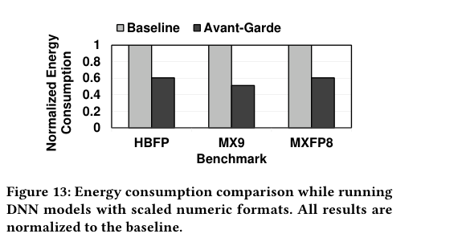
Figure 13 · 原文 PDF 第 10 页
硬件扁平化对精度的影响（表 4）：
把复杂的多级格式强行“扁平化”为单级格式，本质上是一种重量化过程，读者自然会质疑这是否会带来精度损失。作者使用微软的 MX 模拟器进行了功能仿真。结果显示，对于 ViT 的准确率以及 BERT/GPT-2 的困惑度（Perplexity），Flattened MX9 与原始 MX9 几乎一致，与全精度 FP32 的偏差不到 0.2%。这证明了前置扁平化过程在算法层面上是安全的。
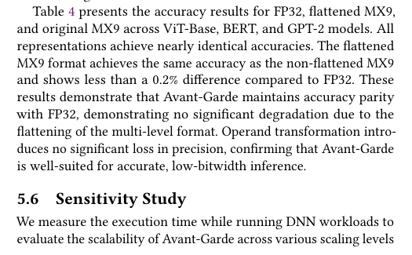
Table 4 · 原文 PDF 第 11 页
4. 总结与文章主线 (Conclusion & Summary)
贯穿全文的主线：
深度学习模型体量的爆炸要求 GPU 必须不断提升算术密度 → → → →
局限性与不可过度推广的结论：
训练场景的局限性： 论文的主要数据基于推理（Inference）。在第 3.2 节作者提到，在训练期间，更新后的权重需要被“反扁平化（Unflattening）”写回内存，这仍然需要依赖 CUDA Core 的软件 API 执行。作者假设这种操作频率较低不影响大局，但在某些频繁更新激活值或参数的高动态训练场景中，这部分软件开销可能会成为新的瓶颈。仿真工艺的代差： 功耗和面积评估基于较旧的 45nm 工艺。虽然架构上的相对提升具有说服力，但其实际在先进制程（如 3nm 甚至多芯粒架构）下引入的布线延迟和功耗占比可能会有所不同。支持的灵活性边界： 尽管称支持未来格式，但由于硬件最大处理宽度（128 字节 Warp）已被写死，若未来出现更大 Block Size 的极端格式，Avant-Garde 必须将其切片（Slice）处理，这可能会引入目前未被完全评估的调度开销。